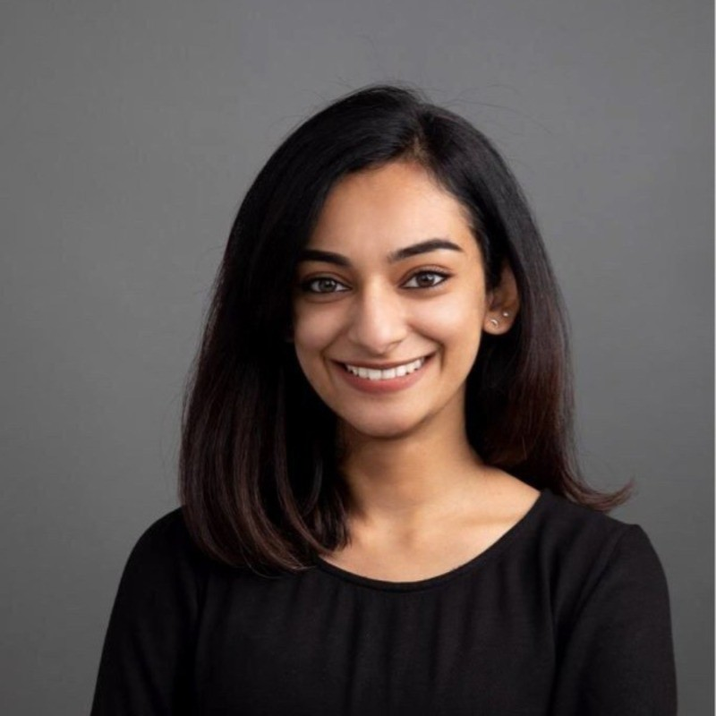

Sana Ibrahim

Summary
Results-driven professional with 10 years of experience in client coordination and events. Proven track record of delivering exceptional project management, teamwork and coordination. Known for my attention to detail, effective communication, and collaborative approach, resulting in successful cross-functional partnerships. Committed to continuous learning and ensuring the application of best practices, motivated self-starter who thrives in fast-paced environments, consistently meeting deadlines and exceeding expectations.
Work Experience
Partnerships & Programme Coordinator,Dubai Design Week | Downtown Design - July 2021 to Present
- Draft proposals, agreements and reports with the Fair Director for partnerships, designers, events & programmes
- Main point of contact and ongoing support for all partnerships and special projects
- Work closely with programme curators and liaise on all assets required for permits and marketing
- File, review proposals and design submissions for internal review and selection
- Prepare project timelines and overviews for the overall execution of the events & projects
- Coordinate with marketing team in distribution of content to PR team and create website listings
- Manage and create the programme schedule including tailored tours schedules for VIPs and public audience
- Oversee partner events and projects in the lead up to and during the fair ensuring all logistical and operational aspects are met
Gallery Relations Assistant,Art Dubai - February 2021 to April 2021
- Assisted the galleries on all aspects in the preparation of their participation for the art fair and on-site
- Accomplished administrative assignments such as research, exhibitor statistics and database
- Assisted in compiling and editing all content for the website and other collaterals
- Supported the production of the exhibitions and overseeing on-site operations during the fair
- Coordinated VIP & public programming by compiling tour content
Studio Manager, eL Seed - June 2019 to May 2020
- In charge of research on new suppliers and maintain strong relationships with existing ones
- Responsible for setting up client accounts, invoices and track payments, modify catalogues and price sheets
- Maintained and oversaw studio daily operations, project productions costs, sales report, update client & supplier database and inventory
- Project managed open studio nights and retail pop-ups
- Completed operational requirements by scheduling and assigning tasks to team members; following up on work results weekly to improve productivity
- Recruited a team and offered training achieving increased productivity and elevated quality of work for the studio
Squads Coordinator, Hamilton Aquatics - March 2018 to March 2019
Studio Coordinator, The jamjar - September 2015 to September 2017
Fashion Consultant, Michelle Belau - June 2014 to May 2015
Skills
Problem Solving ⭐️⭐️⭐️⭐️
Critical Thinking ⭐️⭐️⭐️⭐️
Adaptibility ⭐️⭐️⭐️⭐️
Microsoft Office ⭐️⭐️⭐️
Salesforce ⭐️⭐️⭐️
Adobe ⭐️⭐️
Education
BA Fashion Design, Heriot Watt University
Contact Me
©Sana Ibrahim. All rights reserved.